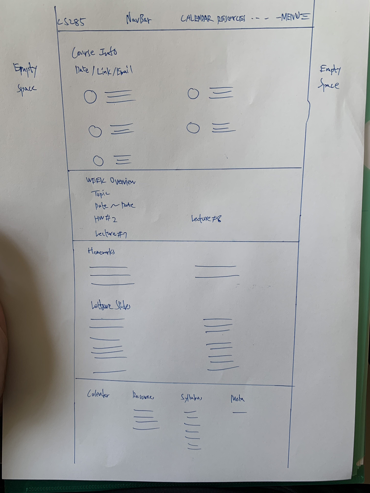
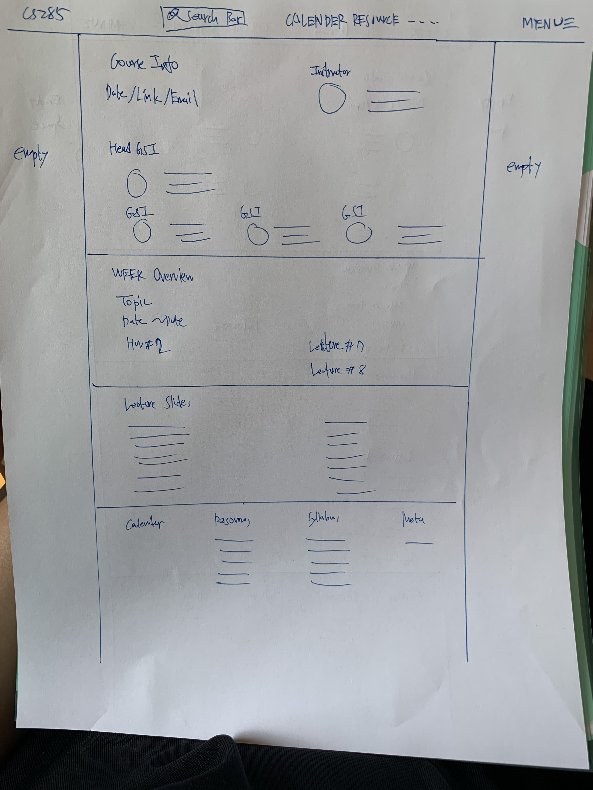

-
Using the favorite website you chose in homework 1, create a wireframe for one page of it using pen/paper, PowerPoint, or any your tool of choice. (use the 'img' tag!) Make sure to let us know what the name of your website is (Use the 'p' tag!)
CS285 Deep Reinforcement Learning Course Website

-
Try to improve the website you've chosen, and create a redesigned wireframe of one page for the same website using the principles of visual hierarchy that you learned from the article.

-
What is the goal of the website? Who is it intended for? How does the design accomplish this? Write 2-3 sentences answering these questions. (Use the 'p' tag again!)
The goal of the website is for students in CS285 to review the course materials, watch lecture recordings, and find the homework documents. It is intended for students who are taking or interested in learning Deep Reinforcement Learning like me. The design accomplishes this by dividing GSI OH, homeworks, slides, and notes into sections.
-
Write 2-3 sentences about what problems your redesign addressed, and how it solved them.
The left and right side of the website has too much space. The GSI OH does not allign properly. The week overview doesn't order things according to categories. The Lecture Slides section has all available links underlined, which doesn't differentiate between current week or the past.
NOTE: Make sure to include the wireframe images in the website and don't just put it in your assets folder!
Your wireframes should look something like this: